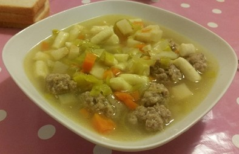
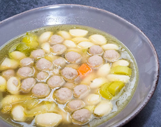

Min Livret
Min absolutte livret er og bliver gammeldags Hønsekødsuppe.
Når man snakker om hønsekødsuppe har hver sin familie deres helt egen opskrift. Men udover det kan man jo også bare købe suppe fra f.eks. MOU
Hvis man ikke har sin egen opskrift kan man finde en på nettet. og der er her en opskrift på hjemmelavet suppe bare lick på linket link til opskrift
 